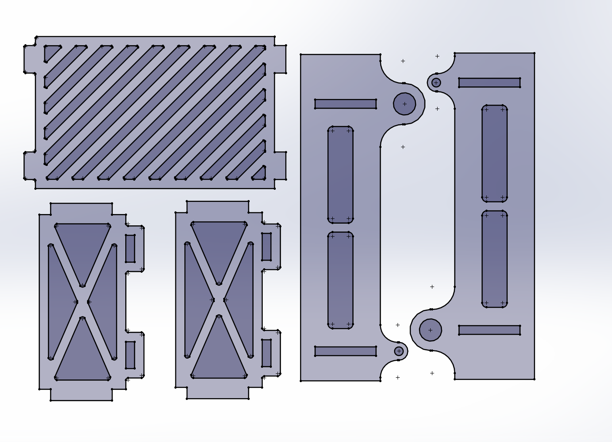
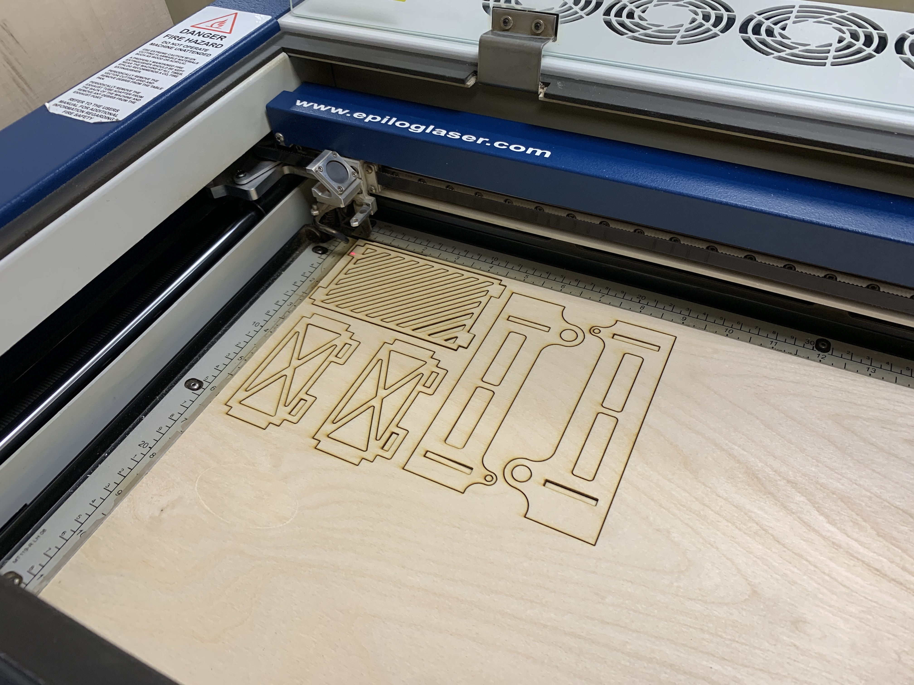
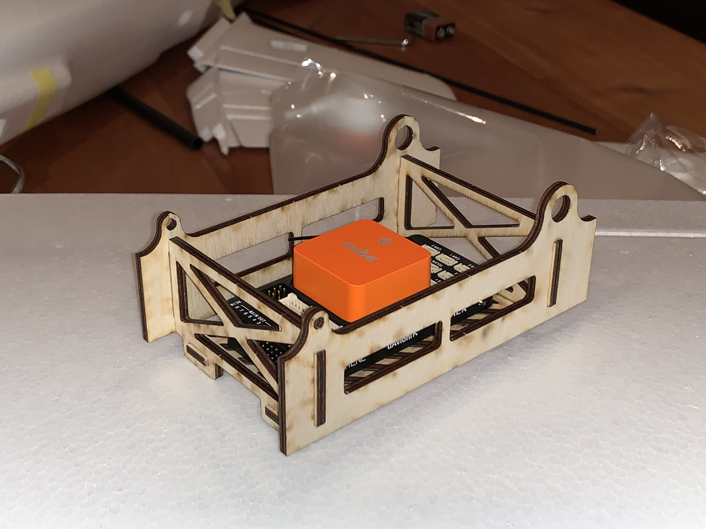

Verkefni II - Laserskurdur

Verkefni fyrir hendi
Nú átti að hanna eitthvað úr krossvið til að laserskera. Enn fremur áttu stykkin að passa saman með press fit.
Skref 1 - Teikning
Ákveðið var að endurhanna hluta burðarvirkis fjarstýrðrar flugvélar til að það gæti tekið við flugtölvu og öðrum græjum. Burðarvirkið gamla var því mælt og öll mikilvæg mál skráð til þess að nýja burðarvirkið gæti passað í vélina. Svo var botnplata útfærð þannig að hún myndi passa með press fit. Þetta var allta teiknað í solidworks sem stakir partar svo sett saman í assembly til að athuga hvernig allt passaði saman. Sem betur fer kom villa í ljós þegar allt var sett saman í assembly og þá lítið mál að leiðrétta.

Skref 2 - Gerð skurðarskrár
Nú voru þeir fletir sem átti að skera út vistaðir sem dxf-skrár. Skrárnar voru síðan opnaðar í nýrri sldprt-skrá og stillt upp þétt til að sóa sem minnstu efni við skurðinn. Nú átti bara eftir að gera ráð fyrir KERF. Ákveðið var að láta KERF-ið vera 0.15mm en ekki 0.13mm eins og var mælt í KERF-prófinu. Þetta tryggði að partarnir pössuðu aðeins þéttar saman. Línurnar voru því færðar um 0.15mm þar sem press fit átti að vera og götin fyrir koltrefjastangirnar. Þessi skrá var vistuð sem dxf og nú átti að opna hana í Inkscape til að stilla línuþykkt á 0.02mm fyrir skurðinn. Sama vandamál kom upp og í KERF-prófinu, Inkscape gat ekki lesið skrána. Í þetta skipti var prófað að finna DXF í SVG breyti á netinu sem virkaði ljómandi vel. Skráin opnaðist þá án vandræða í Inkscape og pdf var gert.
Skref 3 - Laserskurður
Farið var í laserskerann og hann núllstilltur. Skurðurinn var svo settur af stað og byrjaði vel. Eftir einhvern tíma varð nokkuð ljóst að þeir partar sem voru í skurði væru of stórir. Skurðurinn var stoppaður og málið athugað betur. Við breytingu úr dxf í svg-skrá skalaðist skjalið eitthvað upp. Skölunin var leiðrétt í Inkscape og skurðurinn hafinn aftur. Þetta gekk vel og tók ekki langan tíma. Íhlutirnir voru svo teknir í sundur og samsetning prófuð. Allt passaði þétt og vel nema einn stubbur. Tálgað var örlítið af honum og þá small þetta saman. Burðarvirkið var svo sett í vélina og passaði upp á hár og tók enn fremur við flugtölvunni.
Niðurstaða
Frumraunin í laserskurði fór eftir óskum. Þetta er mögnuð framleiðsluaðferð og ekki verður hikað við að nota hana aftur. Hún er mjög nákvæm og hraðvirk. Slit á laserskeranum sjálfum er lítið og því helsti kostnaðurinn fólginn í efninu. Það getur verið kúnst að læra á að gera KERF í CAD-hugbúnaði eins og Solidworks og færa svo yfir í Inkcape en eflaust eru til enn hraðvirkari leiðir til að hanna og senda í skera.
Við skurðinn sjálfann kom tvennt í ljós. Ef platan er örlítið boginn verða vandamál í samsetningu því ekki allir fletir verða hornréttir. Ekki var þetta mikið vandamál í þessu tilfelli en kynni að vera það fyrir aðrar samsetningar. Hitt tengist efninu. Skorið var úr krossviðnum á ská til að létta íhlutina. En viðurinn hefur lítinn styrk í þessa stefnu. Betra væri að hann hlutinn með beinum skurðum eða snúa honum á ská í skurði ef nauðsynlegt væri að tryggja styrk á þessum stað.
Nú er unnið að því að fínpússa þessa færslu og bæta við nokkrum skýringarmyndum og aðeins meira útskýringartexta.
